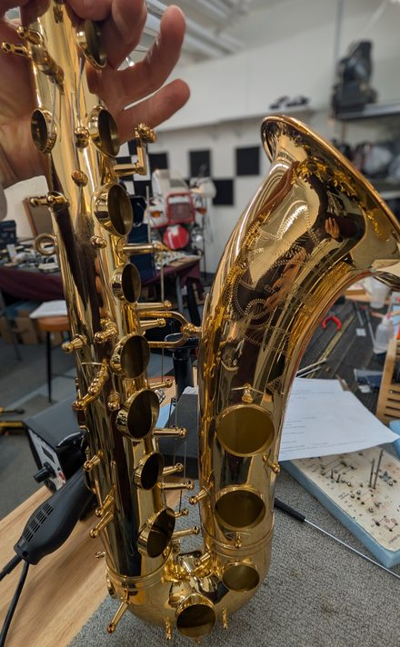

Saxophone Repair
Contact Me

Pads
Adjustment and replacement
Keywork
Key cup and tonehole leveling, swedging and key fitting
Corks & felts
Neck and tenon cork replacement, adjustment and replacement of materials for response and intonation
Regulation
Spring adjustment and replacement, key height adjustments for response and intonation
Bring your horn in for a free assessment before any work begins — I'll walk you through what it needs and give you a clear estimate first.